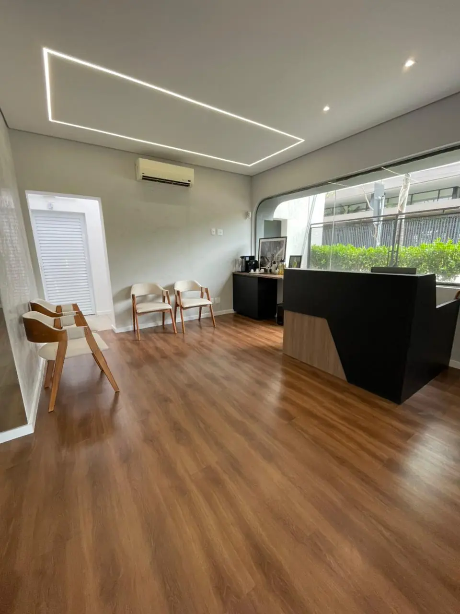
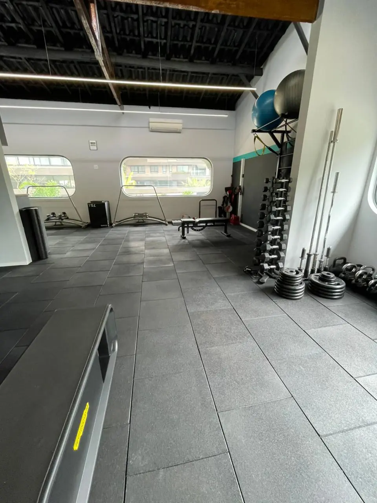
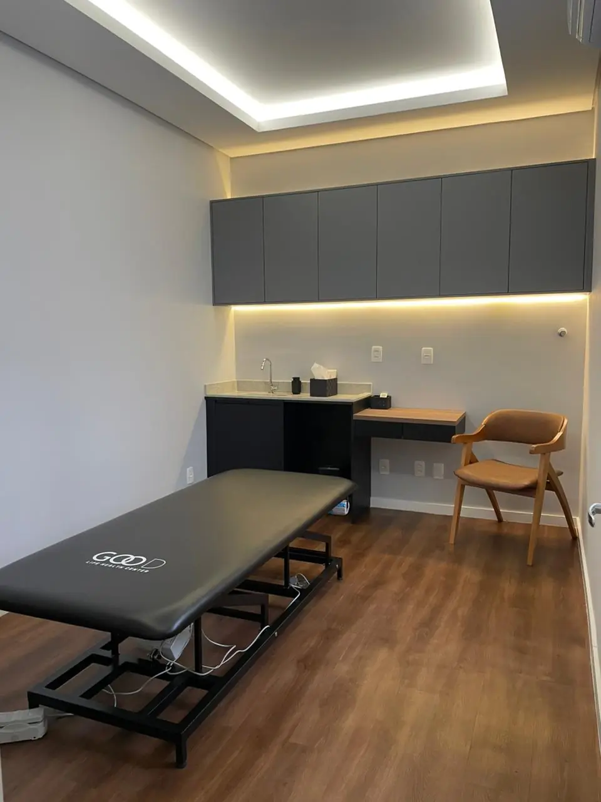
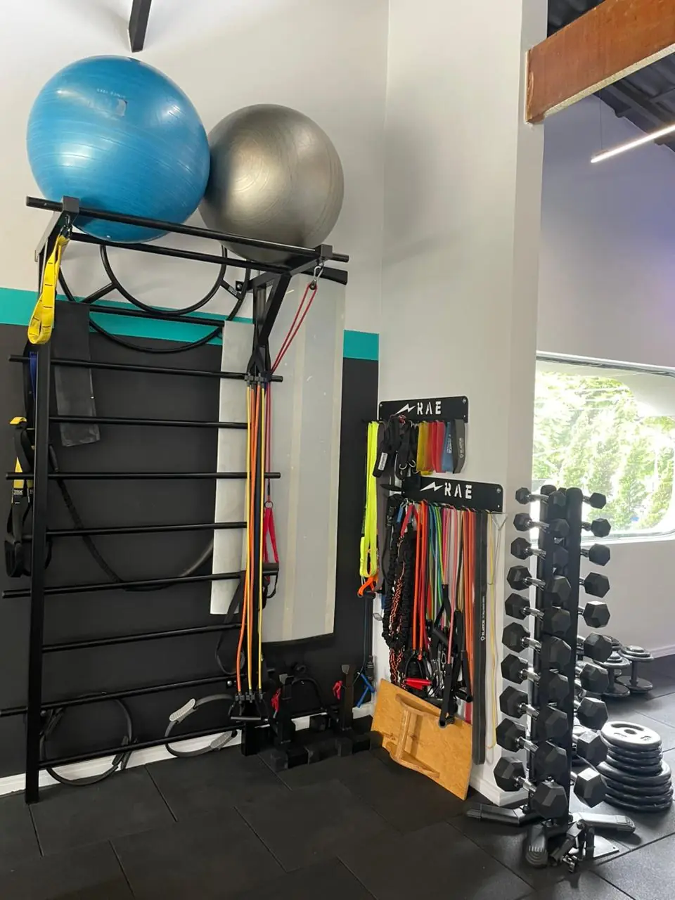
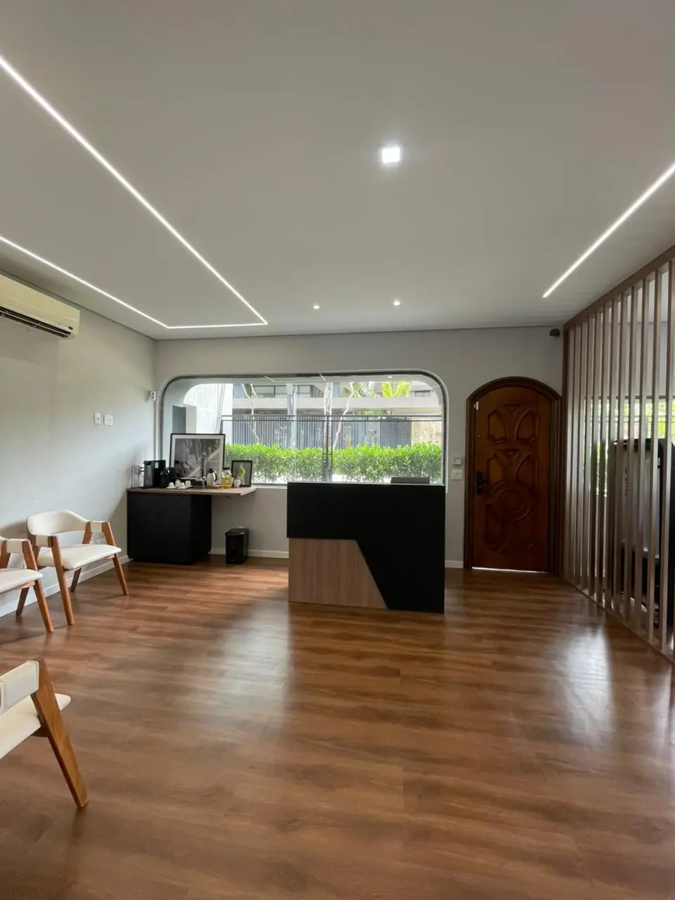
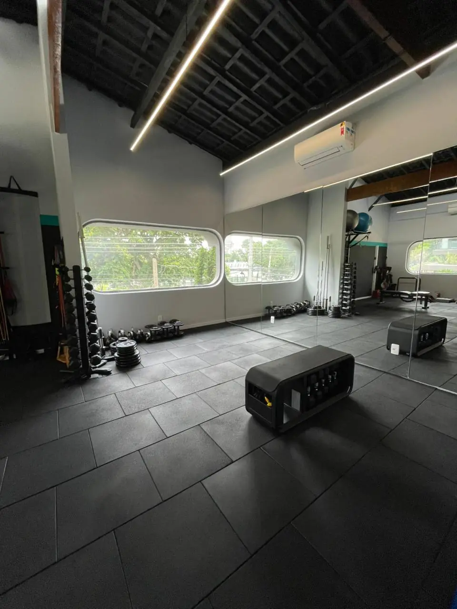

Voltar.
Quando existe algo que a dor ou a lesão tirou de você.
Fisioterapia, preparação física, medicina e nutrição trabalhando de forma integrada em um plano individualizado. Da recuperação à performance, com um objetivo maior: a sua autonomia.
Elas chegam porque alguma coisa importa para elas. A dor pode ser o motivo da chegada, mas não precisa definir toda a jornada. Existe uma pessoa antes da lesão. Existe uma vida além do tratamento.
O que você quer voltar, continuar ou começar a fazer?
Toque em um. A resposta orienta o resto da página e a sua primeira mensagem.
Comece pela avaliação. Em uma conversa, entendemos onde você está e para onde quer ir: .
Não enxergamos apenas um joelho, uma coluna, um ombro, um exame. Cuidamos de alguém que precisa daquele corpo para viver. Para trabalhar. Para viajar. Para correr. Para brincar. Para competir. Para envelhecer com independência.
O corpo faz parte de uma vida. Antes de decidir o caminho, precisamos compreender quem está diante de nós: o histórico, a rotina, a dor, as limitações, os objetivos.
Para alguém, é voltar a correr. Para outro, competir de novo. Para alguém, é trabalhar sem dor. Para outro, acompanhar o crescimento dos filhos. Seis caminhos, um mesmo cuidado.
Quando existe algo que a dor ou a lesão tirou de você.
Quando o objetivo é preservar movimento, saúde e independência.
Quando estar bem já não é suficiente e o objetivo é chegar mais longe.
Porque saúde não precisa começar quando aparece um problema.
Porque performance é consequência de um corpo compreendido, preparado e acompanhado.
Porque todos esses objetivos apontam para a mesma coisa: autonomia para viver a vida que importa para você.
Integração não é ter vários profissionais no mesmo endereço. É fazer diferentes profissionais trabalharem para o mesmo objetivo: o objetivo da pessoa.
Cuidar para voltar.
Recuperar movimento, função e confiança para retomar aquilo que importa.
Ver a frenteCuidar para evoluir.
Construir força, capacidade e confiança para preparar o corpo para onde você quer chegar.
Ver a frenteCuidar para continuar.
Compreender a saúde de forma ampla para tomar melhores decisões ao longo da vida.
Ver a frenteCuidar para sustentar.
Transformar alimentação em parte de uma estratégia de saúde, recuperação e performance.
Ver a frenteNão como cordialidade, nem como uma palavra bonita do mercado da saúde. Cuidado é aquilo que transforma conhecimento em experiência. É a maneira Good de fazer tudo.
A clínica é onde o cuidado acontece. A vida é onde o resultado aparece.






Pronto, . O WhatsApp abriu com a sua mensagem.
É só enviar. A equipe responde por lá e marca a sua avaliação na unidade que você escolheu.
Se não abriu, toque aqui